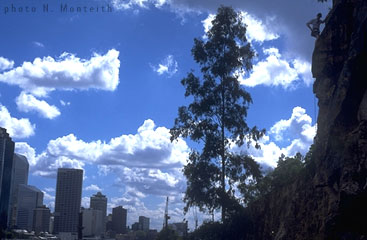

By Lee Skidmore, January 2000
Last updated 20 June, 2003

| Kangaroo Point Climbing Guide |
By Lee Skidmore, January 2000 Last updated 20 June, 2003 |
|
|
|
INTRODUCTION
Kangaroo Point is Brisbane's outdoor climbing gym. It is probably one of the most
user-friendly crags around, with gigantic concrete bollards at the top of the 20m high cliff face for setting up anchors. Perfectly flat grass awaits your bouldering falls. Barbeques lay in ready for your post(and pre?)-climb feast. Night lights allow you to climb into the wee hours of the morning. The river awaits your...hmm...actually, don't worry about the river. Caked-on chalk, climbers on top-ropes
galore, a few chipped holds and bolts, bolts, bolts. Get it into ya!
|
OVERHEARD Early 1997. Large group of bumbling middle-aged abseilers fully decked out with helmets, gloves and thick static ropes. |
ACCESS Winter is fine pretty much all the time, but if you go during the day in summer, you will die. Seriously though, the rock is too hot to climb on, you'll set your hands on fire. The only sane time to climb is early in the morning, or from late afternoon into the evening. Lights mean you can climb until about 2-3am or so. Very convenient. If you don't get there early though, top ropes will be set up on the best routes. |
|
THE CLIMBING
GUIDEBOOK |
 |
|
Above: The guidebook cover. Darrin Carter aiding Hanger Wall |
If you're into bouldering, check out Neil Monteith's online Kangaroo Point Bouldering Guide.
| SOME RECOMMENDED ROUTES | ||
| By Ignorance | 13 |  |
| Halva | 16 | |
| Bum Full Of Fists (A. Robbie pictured right) | 17 | |
| Chubba Chips Mods | 19 | |
| Squawk | 20 | |
| Idiot Wind | 21 | |
| Fowl Deeds In The Chookhouse | 22 | |
| Piles | 22 | |
| Chip-A-Holdaway | 22/23 | |
| Cucumber Castle | 23 | |
| Brisbane Bitter | 24 | |
[Go to Kangaroo Point Climbing Gallery]

{kind=link}